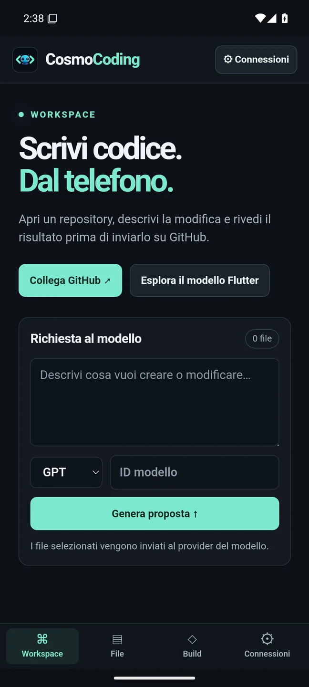
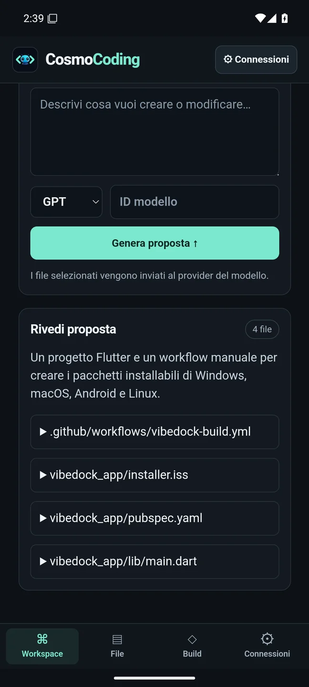
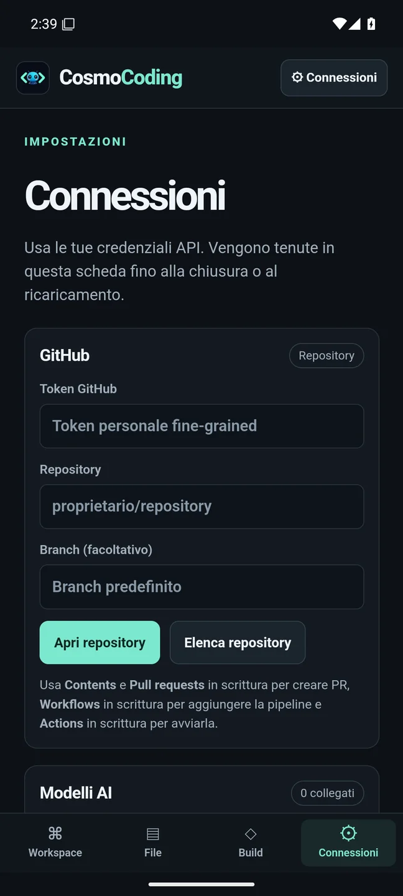

Workspace di sviluppo
dal telefono.
Apri il tuo repository GitHub, descrivi una modifica a GPT, Claude o Gemini e rivedi il diff prima di aprire la pull request.
Android · Windows · macOS · Linux
lib/main.dart
Richiesta al modelloAggiungi una schermata di benvenuto.
Esempio di proposta
return MaterialApp(− home: HomeScreen(),+ home: WelcomeScreen(), );Revisione del codice su GitHub.
- 01
Apri il repository
Scegli il branch e i file da inviare al modello.
- 02
Diff del codice
Confronta le righe aggiunte e rimosse, poi scegli quali file includere.
- 03
Apri la pull request
Invia le modifiche su un branch dedicato. Dopo il merge puoi avviare GitHub Actions.


I tuoi strumenti, in CosmoCoding.
Usa le tue credenziali e collega i servizi del tuo progetto.
Codice e build GitHub
GitHub
Repository, pull request e GitHub Actions.
Modelli AI GPT, Claude e Gemini
GPT, Claude e Gemini
Scegli il provider per generare la proposta.
Database Supabase
Supabase
Consulta i progetti del tuo account.
Deploy Vercel
Vercel
Controlla lo stato di anteprime e produzione.
